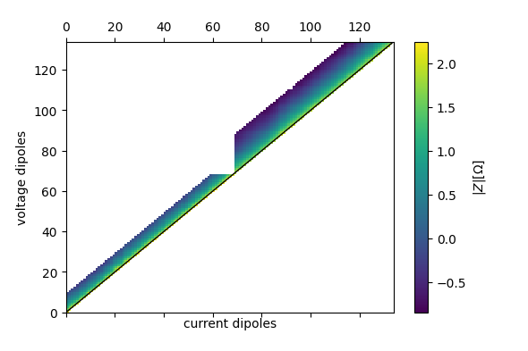
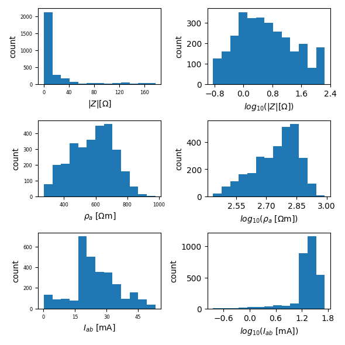

Note
Click here to download the full example code
Importing Syscal ERT data from roll-a-long scheme¶
import reda
create an ERT container and import first dataset
ert_p1 = reda.ERT()
ert_p1.import_syscal_bin(
'data_syscal_rollalong/profile_1.bin'
)
ert_p1.compute_K_analytical(spacing=0.2)
ert_p1.pseudosection(
filename='profile1_pseudosection.pdf',
column='r', log10=True
)
Out:
generating ids
assigning ids
found duplicate coordinates!
(<Figure size 590.551x393.701 with 2 Axes>, <matplotlib.axes._subplots.AxesSubplot object at 0x7f01512b51d0>, <matplotlib.colorbar.Colorbar object at 0x7f01409b7be0>)
create an ERT container and import second dataset
ert_p2 = reda.ERT()
ert_p2.import_syscal_bin(
'data_syscal_rollalong/profile_2.bin',
)
ert_p2.compute_K_analytical(spacing=0.2)
ert_p2.pseudosection(
filename='profile2_pseudosection.pdf',
column='r',
log10=True
)
Out:
generating ids
assigning ids
found duplicate coordinates!
(<Figure size 590.551x393.701 with 2 Axes>, <matplotlib.axes._subplots.AxesSubplot object at 0x7f0140a9a1d0>, <matplotlib.colorbar.Colorbar object at 0x7f01407c8470>)
create an ERT container and jointly import the first and second dataset, thereby shifting electrode notations of the second dataset by 24 electrodes
ert = reda.ERT()
# first profile
ert.import_syscal_bin(
'data_syscal_rollalong/profile_1.bin'
)
# second profile
ert.import_syscal_bin(
'data_syscal_rollalong/profile_2.bin',
electrode_transformator=reda.transforms.transform_electrodes_roll_along(
shiftby=24
)
)
# compute geometric factors
ert.compute_K_analytical(spacing=0.2)
ert.pseudosection(filename='pseudosection_both_profiles.pdf',
column='r', log10=True)
ert.histogram(filename='hist_both_profiles.pdf',
column=['r', 'rho_a', 'Iab', ])
- 
- 
Out:
generating ids
assigning ids
generating ids
assigning ids
found duplicate coordinates!
Generating histogram plot for key: r
Generating histogram plot for key: rho_a
Generating histogram plot for key: Iab
{'all': <Figure size 590.551x590.551 with 6 Axes>}